Created Wednesday 24 March 2021 (21-03-24_14-28-57)
@2021 @report
McKinsey (2020). Net-Zero Europe: Decarbonization pathways and socioeconomic implications. McKinsey & Company. https://www.mckinsey.com/business-functions/sustainability/our-insights/How-the-European-Union-could-achieve-net-zero-emissions-at-net-zero-cost
.\2020-ClimatNetZeroEurope-McKinsey.pdf
All data is from 2017
In December 2019, the European Commission introduced an ambitious proposal to make the bloc climate-neutral by 2050. Although the proposal set specific 2030 and 2050 emission-reduction goals, it did not explain how much each sector and member state should contribute to the desired emissions reductions or what achieving those reductions would cost.
To help inform the planning efforts of policy makers and business leaders, McKinsey has attempted to find a societally cost-optimal pathway to achieving the emissions targets. Countless possible pathways exist, covering a wide range of costs and economic impacts. This report describes the least costly pathway among the many we identified.
This cost-optimal pathway illustrates the technical feasibility of reducing the European Union’s emissions 55 percent by 2030 compared to 1990 levels and reaching net-zero by 2050. It also shows that decarbonizing Europe can have broad economic benefits, including GDP growth, cost-of-living reductions, and job creation.
To achieve these benefits, the European Union has a long road ahead (Exhibit 1). In 2017, the EU-27 countries emitted 3.9 GtCO2e, including 0.3 GtCO2e of negative emissions. Although this accounts for only 7 percent of global greenhouse gas (GHG) emissions, the European Union achieving climate neutrality could serve as a blueprint for other regions and encourage other countries to take bolder action.
--10-- (NOTE: these are page numbers from the report)
Key messages
- Europe can reach net zero emissions at net zero cost;
- average cost of living would decline slightly for low- and middle-class households, provided that costs and savings were passed along to consumers
- The transition would yield a net gain of 5 million jobs,
- creating 11 million and eliminating 6 million through 2050.
- Up to 18 million could need training and transition support.
- Power sector would reach net zero emissions in 2040; most of the necessary tech is available.
- Transport 2045,
- buildings late 2040s,
- industry in 2050,
- and then agriculture.
- >50% of emission reductions could be achieved with mature and early-adoption techs.
- ca. 25% would come from pilot-stage techs like CCS
- 15% from techs now in R&D phase.
- Energy systems and land use would need to be reconfigured.
- Oil, gas and coal use would decline by more than 90%, power demand would double
- RE sources would generate more than 90% of electricity, up from 35% now.
- Some 30 Mha of marginal lands would be used to produce biomass.
- decarbonizing Europe is less expensive if the burden is shared effectively
- Nordics could help offset residual GHG emissions elsewhere
- nearly 1 trillion € must be invested per year; cost savings would offset that
- on average, 800 bn €/yr, ca 25% of all EU capital outlays, would need to shift from carbon-intensive techs to low-carbon techs.
- An additional 180 bn € would need to be invested each year. That sum would be offset by savings in operating expenses.
- Policy interventions required to stimulate investment
- just half of the investments needed for a net-zero pathway would turn a profit
- government financing needed of around 4.9 bn €
- alternatively, a carbon price of 50 €/tCO2e would make 2/3 of the necessary investments profitable; carbon price of 100 €/tCO2e would make 85% profitable.
- Energy security and competitiveness could increase
- Europe to become effectively energy independent
- but could become dependent on imports of climate-neutral technology components or materials
- but has a major opportunity to accelerate R&D and penetrate new export segments
- All stakeholders must take action now.
- Near-term actions include scaling up existing techs and businesses
- accelerating innovation and investment to enable reductions after 2030
- investing in R&D of techs that will complete the transition by 2050
--12--
In 2017, the EU-27 countries emitted 3.9 GtCO2e, including 0.3 GtCO2e of negative emissions
- this accounts for only 7% of global GHG emissions, but EU achieving climate neutrality would have big impact
- would serve as a blueprint
- encourage other countries to take bolder action
- kickstart the virtuous cycle of increasing adoption and cost reduction of low-carbon technologies
Emissions come from
- 28% transportation
- 26% industry
- 23% power
- 13% buildings
- 12% agriculture
- Across all sectors, a total of 80% of GHGs is caused by fossil fuel emissions
- negative emissions can offset some hardest-to-abate emissions
- nevertheless, achieving the targets will require significant changes
Exh 1: emission paths
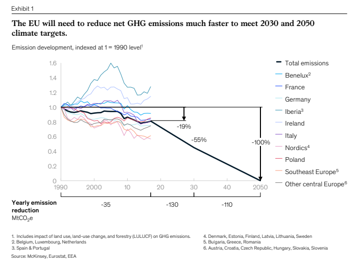
Executive summary
--14--
Exh 2: historic emissions by sector
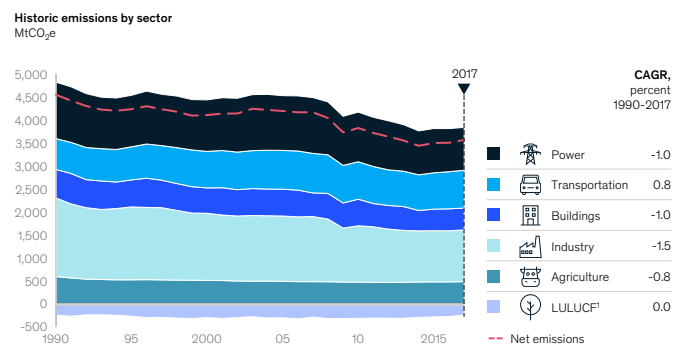
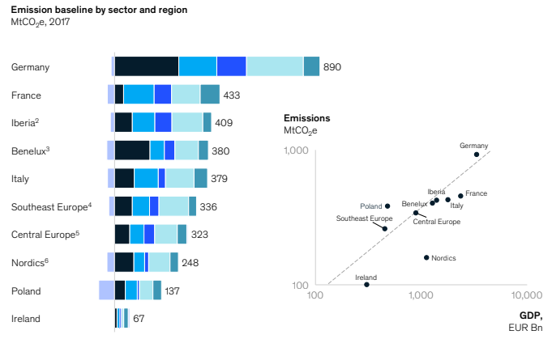
15
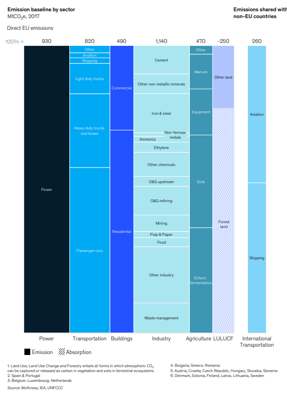
16
- some regions like Benelux are home to much heavy industry and serve as hubs for air freight and shipping, which are hard to decarbonize
- in some countries like Spain and Ireland, emissions have grown since 1990 b/c of economic growth
- low- and middle-class households would see a slight decrease in costs, high-income households would see a small increase
- VALUE OF STRANDED ASSETS WOULD TOTAL 215 BN €
- Calculation: share of remaining useful life at point of retirement * initial capital investment
- e.g. retiring asset w/ lifetime of 50 yrs and cost of 50 M€ after 30 yrs: 50 M€ * (20 yrs/50 yrs) = 20 M€
- Calculation: share of remaining useful life at point of retirement * initial capital investment
- this report outlines and explores one particular pathway that is feasible from a technology and supply chain perspective and cost-optimal in aggregate, based on current outlooks.
- accounted for many EU-wide and regional constraints such as
- amount of sustainably available biomass
- supply chain constraints limiting the ramp-up rates of EV production
- total available land for RE production
- DID NOT constrain economic growth nor consumption
- assumed production locations will not shift
- DID NOT account for the value of non-monetary benefits from reducing emissions, e.g.
- air pollution and associated health benefits
- reduced physical climate risks
- Result: pathway to reducing overall emissions by 55% (compared to 1990) by 2030 and 100% by 2050
- Would require a substantial departure from the current trajectory
- USES SOCIETAL DISCOUNT RATE TO MINIMIZE NET SYSTEM COSTS
--18--
- power sector must expand rapidly
- EV supply chains a bottleneck
- it will take close to 10 years to set up supply chains to support a switch to 100% EV sales
- Currently 35% of building heat is RE, increases to 100% by late 2040s
- Industry would be close to climate neutral by 2050, most expensive sector to decarbonize
- but already in the next decade, about 40% of emissions will have to be reduced
- H2 steelmaking should be accelerated, would kickstart hydrogen industry
- will require offsetting
- in agriculture, more efficient farming practices could reduce emissions, such as
- managing manure
- switching farm equipment to alternative fuels
- using enhanced efficiency fertilizers
- but agro is still by far the hardest sector to abate without changes in consumption
- this is because >50% of agro emissions come from raising animals for food
- these emissions cannot be reduced without significant changes or tech breakthroughs
- vaccines or feed additives that inhibit enteric fermentation
- this report did not factor in dietary switch; therefore it requires offsetting agriculture emissions with land-use changes that would create more carbon sinks
--19--
Exh 3 Sectoral emission development
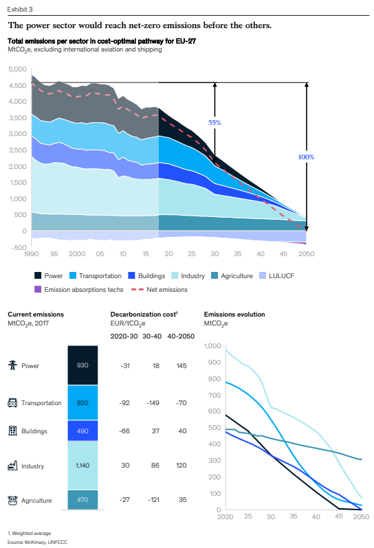
--20--
Four geographical factors determine how easy the targets are:
- Local climate
- CO2 storage opportunities
- local agricultural practices
- amount of land available for reforestation and construction of wind farms and solar plants.
If climate goals were to be achieved on individual country level, the cost of the transition would increase by roughly 25 € per tCO2e.
Emission reductions
By 2030:
- 47% by large scale electrification
- 17% by increases in energy efficiency
- 15% by demand-side measures and circularity
- 13% by hydrogen
- The rest (8%) from
- ramping up biomass
- land use changes
- other innovations such as inert anodes in aluminium production
Exh 4 compensations per country, optimum cost pathway
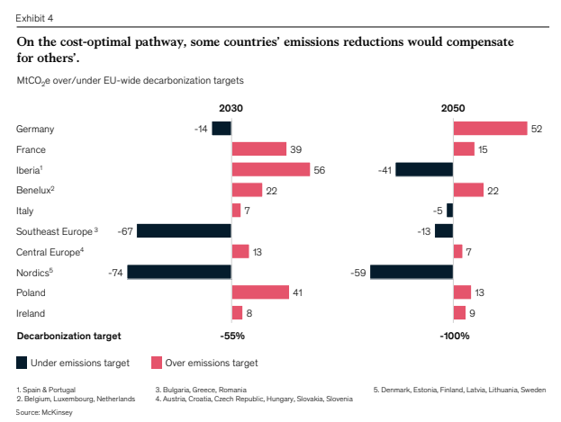
--21--
Exh 5 Means to emission reductions
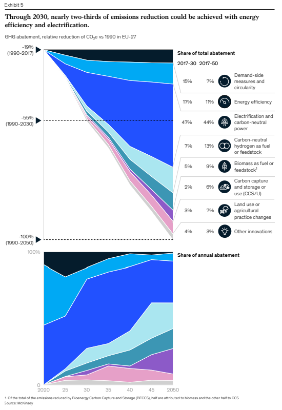
--23--
- believes achieving similar cost reductions in EVs and electrolysers than what was achieved in solar PV is feasible over the next 20 years
- consumption shifts and behavioral changes ranging from replacing cement with cross-laminated timber to people driving less and eating less meat, the transition would generate an average cost savings of 15 € per tCO2
- most coal eliminated by 2030
- oil and gas consumption less than 10% of current by 2050
- RE sources would satisfy more than 80% of primary energy demand by 2050
- most of the rest from bioenergy
- 75% of RE used directly for electricity
- 25% converted to green hydrogen
CAPACITY ADDITIONS
- Solar from 15 GW/yr to 45 GW/yr during 2030-2050
- Wind from 10 GW per year in 2019 to 24 GW per year during 2030-2050
- Interconnections 3x by 2030
- battery storage to 25 GW by 2030, to more than 150 GW by 2050
--25--
Exh 6 CAGR of energy sources
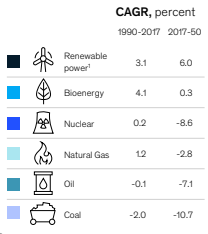
--26--
Exh 7 Land use and bioenergy production
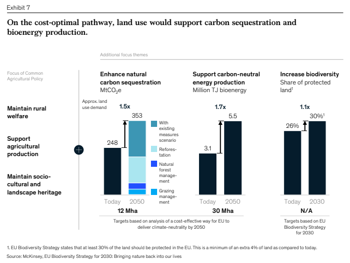
--28--
Exh 8 Alternative pathways
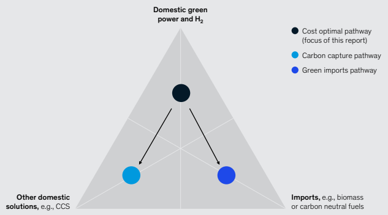
--29--
CCS pathway:
More reliance on CCS to reduce emissions from power and industry
- RE buildup limited to 50% of cost optimal
- transition costs raised by 15%
- marginal cost of power +50%
- hydrogen, primarily blue, +30-40%
- would avoid many of the challenges of scaling up RE
- requires e.g. >3x CCS and extensive CO2 transportation and storage systems
Green-energy imports pathway:
- green energy imported as electricity, H2, sustainable biomass
- RE buildup limited to 50% of cost optimal
- raisess transition costs by 10-20%
- some options like importing H2 via pipelines may be cost beneficial
- would not offer other benefits like job creation or increased EU energy independence
Pathway ambiguities:
- based on today's cost projections, there's a clear cost-optimal pathway for reducing 80% of emissions
- For the remaining 20%, 2-3 options expected to be close in cost; tech development over the next decade determines the winner
- Greatest cost uncertainty: is it cheaper to reduce emissions by biomass, H2, or CCS?
- replacing gas heating with biomethane or H2?
- implementing CCS for industrial heat?
- what is the optimum split of biofuels and synfuels in aviation and shipping?
- what solution would provide the best long-term flexibility in the power system?
- H2 peakers?
- biogas peakers?
- thermal with CCS?
- flexible demand options?
- ultimate costs will vary by country, depending on
- local biomass availability and cost
- cost of H2
- proximity of low-cost storage for carbon capture
- If H2 systems achieve cost breakthrough, H2 demand could be 8x today; in base case it is 5x
- Unexpected breakthroughs in nuclear and other areas possible
--30--
The socioeconomic implications
Capital re-allocation: requires
- redirecting ca. 1/4 of current investments and
- increasing capital outlay by 1 % of GDP
- BUT results in lower operating costs
- Investment total over 30 yrs ca. 28 trillion €
- about 23 trillion € would come from redirecting (on average, 800 bn €/yr)
- amounts to 27% of the annual capital investments currently made in the EU, or 4% of GDP
- additional 5.4 trillion € (avg 180 bn €/yr) to clean techs and techniques
- amounts to increasing EU's current total annual investments by 7%, or 1 % of GDP
- 1900 bn in the buildings sector (29%)
- 1800 bn for power (33 %)
- 410 bn for industry (8 %)
- 76 bn for agriculture (ca. 1 %)
- 32 bn in transportation (<1%)
- 1500 bn (28%) would fund infrastructure to improve energy transmission and distribution in all sectors
Exh 9 Total CAPEX in EU-27
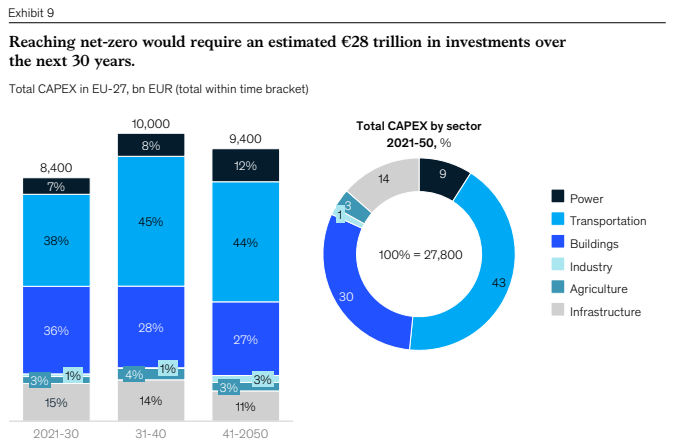
Exh 10 Additional CAPEX (5.4 trillion €)
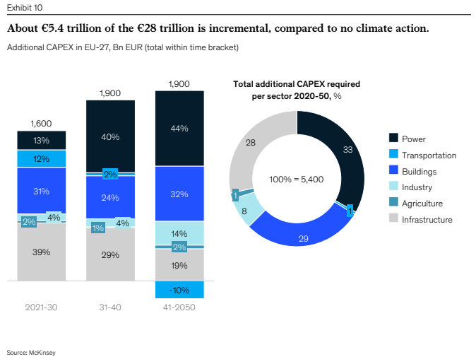
--32--
Cost savings
- from 2021 to 2050, the EU would save an average of $130 bn per year in total system operating cost
- by 2050, these measures would reduce tota system operating expenditures by 260 bn €/yr, or >1.5% of current EU GDP
- most savings would come from domestic transportation - REBOUND DANGER
- however, aviation and industry would have higher expenditures
Exh 11 Operating costs reduced
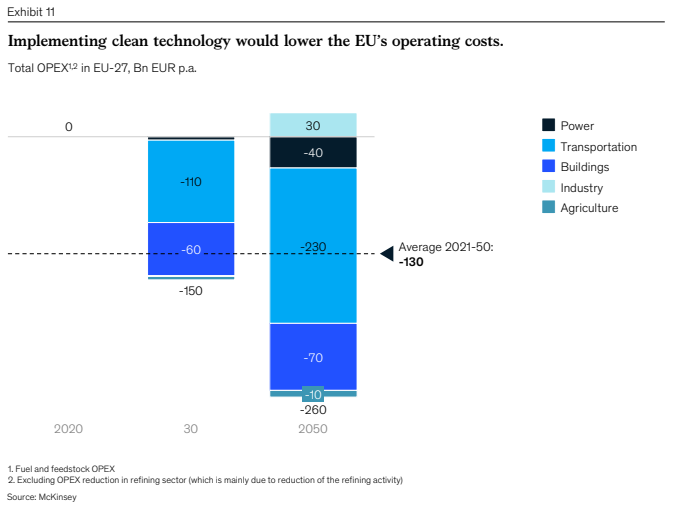
1/2 no investment case
About half of the required 28 trillion € would not have positive investment cases due to discount rate being higher, or because stakeholders do not consider the investment's long term benefits
Exh 12 Investments by type of investment case
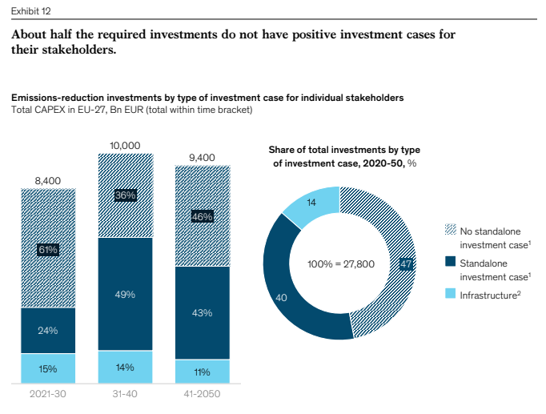
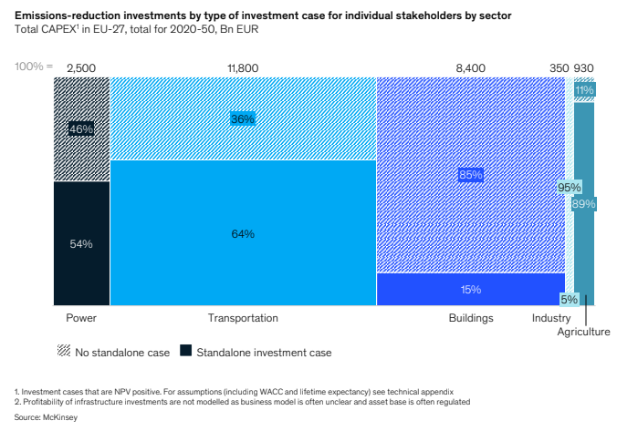
--34--
Direct financing requirement, e.g. carbon contracts and feed in tariffs: 4.9 trillion € by 2050
Carbon price effects
- Carbon price of 50€/t -> 21% more capital unlocked on top of 40 % calculated above
- Carbon price of 100€/t -> another 10% = > 80% of all required capital
Commercial derisking
- reducing investment risks
- employing new financing models and products such as adding insulation costs to house mortgages, see PLAN B:Omavaraisuuslaina , Y:2020:20-11-27 Energiaomavaraisuuslainasta tehty Eduskunnassa aloite
- This could help bring more long-term investors into marketds dominated by short-term decisions, like the heating system or auto market
- long term investors could see viable business cases in at least 10 % more of the total capital expenditures than individual stakeholders
- current markets have low cost capital available that may significantly lower the cost of transition
- capital market innovations could accelerate decarbonization by reducing the cost of capital, e.g.
- asset-backed securities
- utility and corporate power purchase agreements
- government incentives
- risk guarantees
- Increased costs could also be passed on to end customers through regulatory backstops such as banning gas boiler installations after a specific date, or establishing portfolio standards that require a minimum share in the renewable power sector
Middle and lower-income households would see slightly lower costs
- Power and heating bills somewhat lower
- Mobility more affordable, REBOUND RISK!!
- Cost of food and flights would increase
Labor market: a net gain of 5 million jobs
- renewable energy, 1.5 million
- agriculture 0.1 M
- buildings 1.1 M
- Biggest job losses in oil & gas (1.3 M) and transportation (0.2 M)
- Almost 3.4 million of the jobs in 2050 created do not exist - retraining required
- 2.1 million positions would disappear completely by 2050
- However, e.g. oil and gas engineers could transfer to CCS industry
- retirements may cover considerable portion
--35--
Energy independence
- oil, gas and coal demand would decline 80% between 2020 and 2050, from 43 EJ to 6 EJ
- this would reduce the fossil fuel trade deficit by 2/3, see Exh 13
- however, raw material and technology dependence
- cobalt INDEX:RESOURCES:Cobalt
- iridium INDEX:RESOURCES:Iridium
- Exporting heat pumps, electric furnaces, electrolyzers, and zero emission agriculture techs could generate more than 50 bn €/yr by 2050
- industrial geography could change - ammonia, cement, steel migrate to where zero emission inputs are available
Exh 13 Fossil fuel imports
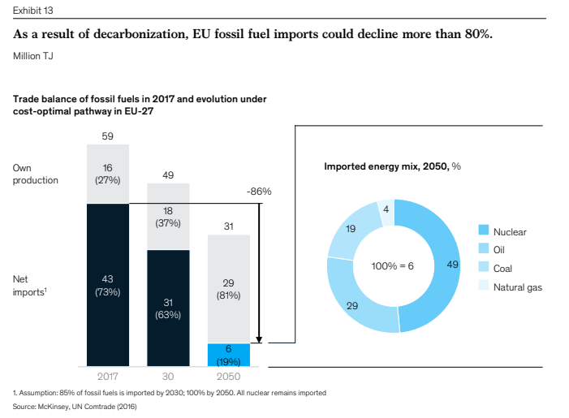
--36--
Charting a way forward: 5 hurdles
- Shift social norms and consumer and investor expectations to make climate-neutral the new normal
- Create secure and stable policy frameworks and regulatory environments
- public sector leadership required
- adopt robust regulatory frameworks rather than incremental policies to provide stable planning and investment signals and incentives
- Encourage constructive industry dynamics
- business leaders critical
- mobilize green capital and investment
- Accelerate net-zero techs along their learning curves
- requires consistent public and private investment, and
- greater willingness among business leaders and policy makers to adopt new techs
Immediate actions required
- Rapidly scale cost-competitive techs and business models to reduce near-term emissions
- solar
- wind
- EVs and charging infrastructure
- better building insulation
- district heating systems
- Accelerate next-generation techs and invest in enabling infrastructure to reduce emissions after 2030
- funding mechanisms should encourage collaboration
- CO2 and H2 price floors - CO2 and H2 pipelines essential infrastructure
- regulated returns on infrastructure
- Invest in R&D and negative emissions to close the gaps to net-zero by 2050
- increased public and private investment required
- reorganizing land use essential to generate negative emissions
- start passing legislation that creates glide paths for each sector to reach net zero emissions, such as automotive emissions standards now in effect
--38--
1. Getting to net-zero by 2050
--44--
Exh 15 Total primary energy demand by sector
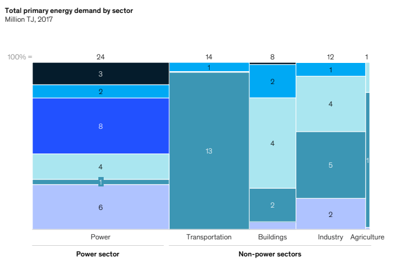
--45--
Sectoral fossil fuel use
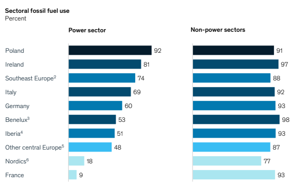
--50--
2. The EU pathway to climate neutrality
--51--
Average abatement costs
- industry €85 per tCO2e
- transport -€100 per tCO2e (net savings)
- energy system decarbonization could reduce average cost of electricity with grid expansion costs offset by the cost savings of switching to RE
- eliminating the last 15 % of power emissions from 2040 to 2050 > 120€/tCO2e
- overall, the total decarbonizatio of the power sector would be cost-neutral by 2050
- agriculture -25€/tCO2e
- switching to electric farming equipment and low tillage practices reduces costs
- giving feed additives to livestock increases costs
- buildings average 5 €/tCO2e
Pace of emission reductions, by sector
2030:
- power sector: -60% through low cost options
- transport sector: -30% through EVs (supply chain requires time)
- buildings: -30%
- industry -35%, of which more than 75% would cost 50-150 €/tCO2e
- more expensive options like electric boilers and CCS required because transport, buildings and agriculture will lag, in order to meet the EU 55% target
- agriculture: -5% (most effective changes require changes in human behavior
2050:
- power sector -90% by the early 2040s
- transport -95% by 2045
- buildings -95% by the end of 2040s
- industry -95%; part of very hard to abate emissions (ammonia, cement) offset by CCS; residual emissions offset by natural carbon sinks
- agriculture: -40%; sector would still emit 300 MtCO2e/yr if livestock not reduced significantly
SUSTAINING CLIMATE NEUTRALITY BEYOND 2050 HINGES ON ESTABLISHING A NEW APPROACH TO LAND USE
--54--
Exhibit 17
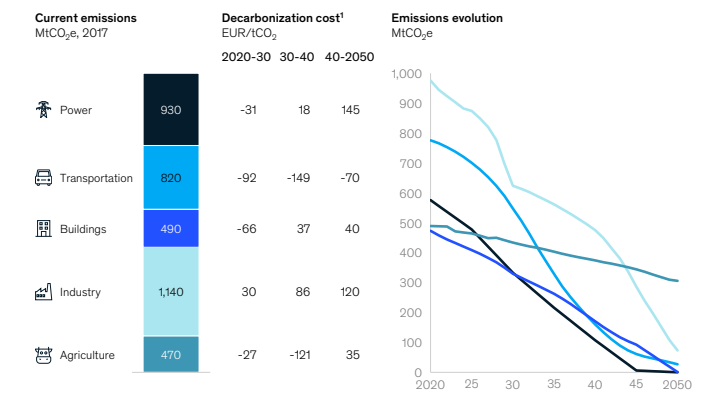
Abatement cost curves, 2030 & 2050
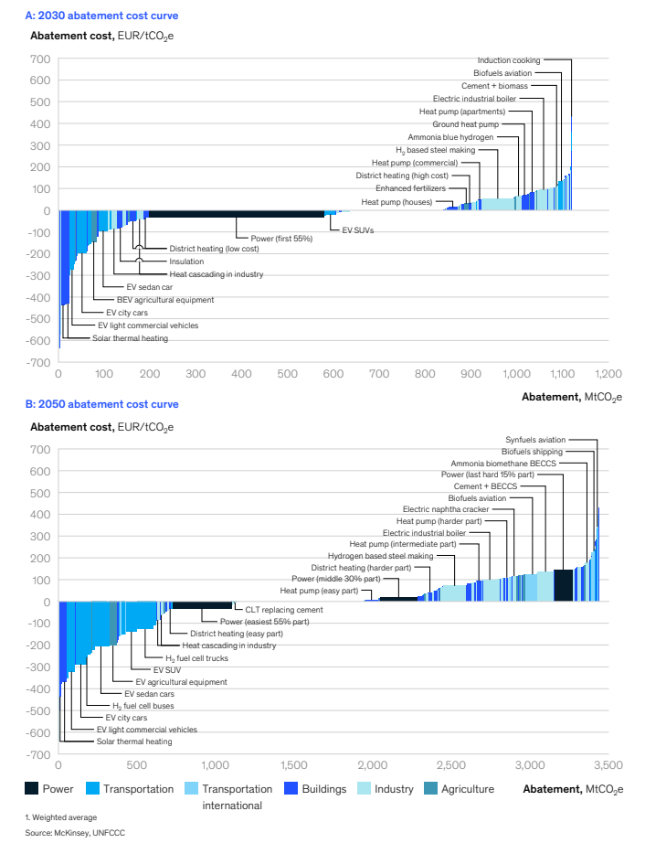
Key geographic differences in pathways
- Proximity to CO2 storage locations; most known locations in the North Sea. Assumes 70% of CCS in Northern Europe. CCS attractive for
- Northern Germany
- Benelux
- Nordics
- Climate
- heating degree days (below 18 degrees C)
- solar irradiance; >60% of the total 1200 GW of added installations would be in Southern Europe; H2 expected to be cheaper in the south
- wind speeds; >70% of wind power in the north
- Agricultural decarbonization opportunities; cost effective carbon abatement opportunities in e.g. new crop management techniques particularly in the
- Nordics
- Iberia
- Southeast Europe
- Available land for carbon sequestration. Afforestation can increase GHG absorption particularly in
- Iberia (38 MtCO2)
- France (29 MtCO2)
--58--
8 decarbonization levers
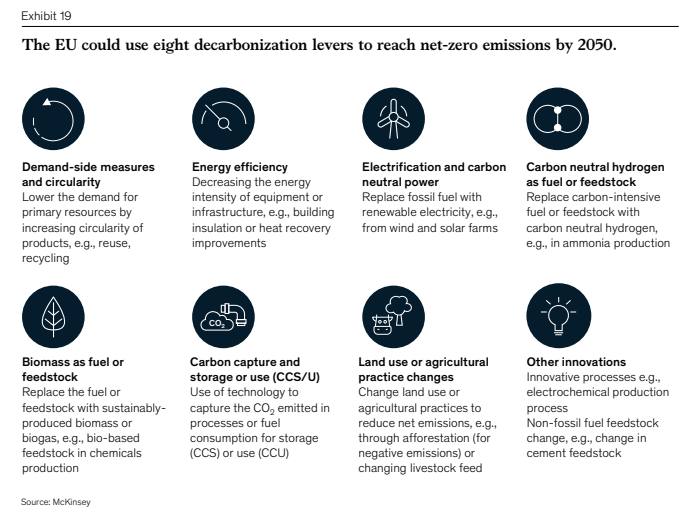
Exh 20 Mix of decarb techs
--60--
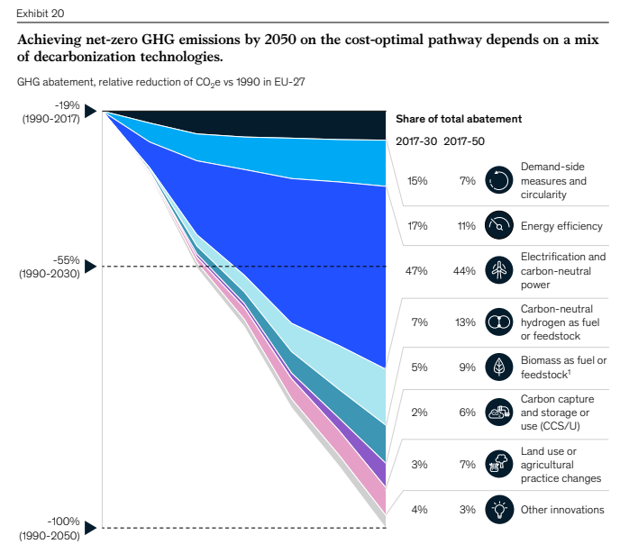
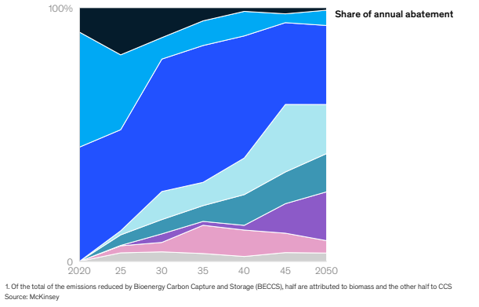
Exh 21 % of total abatement by tech
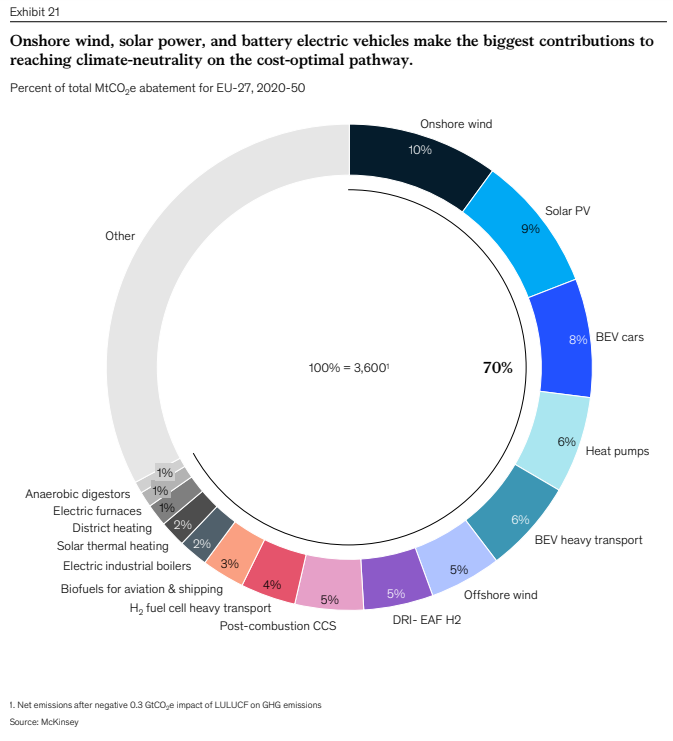
--62--
Effects of behavior changes
- analyzed 12 consumption shifts across regions (Exh 22)
- Behavior changes in the buildings and transportation sectors would reduce emissions by an additional 120 MtCO2e/yr
- would allow industry more time to develop new techs and pursue lower-cost solutions
- this would decrease the average cost of abatement by 1/3 through 2030
- Increasing LULUCF absorption by 130 MtCO2e/yr would also help eliminate the need for costlier measures to decarbonize the industry and agriculture sectors
- including these behavior shifts, the average cost of decarbonization decreases by 15 percent to 55 €/tCO2e from 2040 to 2050.
- factored into the entire transition from 2021 to 2050, they generate a cost savings of 15 €/tCO2e
Exh 22 12 behavior changes not included in the cost-optimal pathway model
--63--
POWER
- Enhanced demand flexibility: >10% of additional power demand from transportation and buildings are flexible intra-day
- Reduced car usage in urban areas: shift 20% of urban car passenger kms travelled (PKT) to buses
- Last-mile delivery interventions: Reduce long/medium-distance truck vehicle kms traveled by 15%
- //Modal shift from air to rail:// shift 95% of short-haul flight PKT to rail
BUILDINGS
- More attentive energy use: Lower room temperatures by 2oC; reduce electricity demand by 10%
- Increased uptake in smart meters: 90% smart meter adoption instead of 40% in baseline
- Shift to independent energy sources: 25% of detached houses move off-grid
INDUSTRY
- Wood displacement of cement: >65% of cement replaced by cross-laminated wood (CLT)
- Higher plastics recycling rate: Up to 70% plastics recycling
AGRICULTURE
- Diet shift away from meat: 50% of EU citizens become flexitarian, eating meat once per week and roughly 70% lower dairy consumption
- Reduce food waste by half: today, 5-15% wasted in different categories
- Additional LULUCF: Using 12 Mha of land freed up from productivity gains and 15 Mha from above two levers for LULUCF
--64--
Technologies that need to be accelerated
- Heat pumps
- Heat cascading in industry
- Onshore wind
- EVs
- CCS
- Low-temperature hydrogen heating
- Electric & fuel cell techs for
- aviation,
- shipping, and
- long haul road transport
- Long-term flexibility solutions in power
See Exh 23
CONTINUED R&D CRITICAL AND ALTERNATIVE SOLUTIONS NEEDED IN CASE SOME DO NOT PAN OUT
Exh 23: technology share of abatement, by maturity
--65--
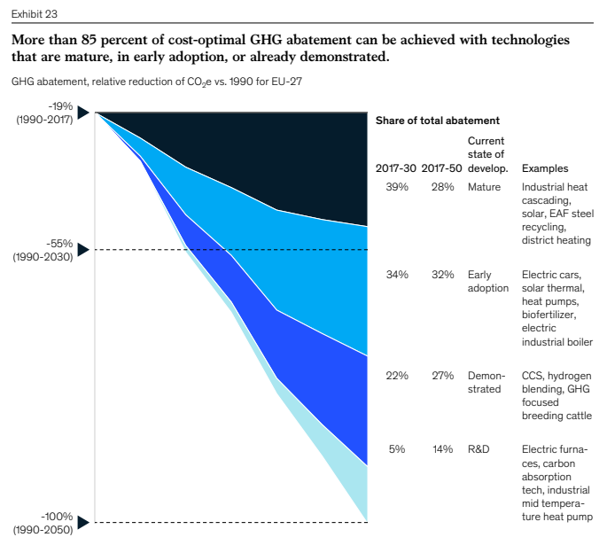
--66--
EU primary energy demand today:
75% fossil fuel
40% of PE comes from the power sector, supplying electricity to other sectors
Of industry, 70% reliant on fossil fuels
In 2050:
>75% of total primary energy consumption would come from electricity
Final energy consumption mix:
- 55% electricity
- 10% hydrogen
- 20% bioenergy in hard-to-abate sectors
- 15% other fuels, e.g. fossil+CCS or heat
Gas use projected to increase slightly until 2030 to replace coal phaseout; but drop in demand for gas in the buildings and industry would offset this eventually.
New build requirements
--70--
Additional to 2017
- 1.1 TW solar power & 0.7 TW wind
- would produce 3000 TWh/yr electricity
- Annual deployment: (from p. 74)
- From 2021 to 2030: 20 GW of wind, 17 GW of solar (comparable to 2019 build rates
- From 2030 to 2050: ca. 40 GW of wind, 34 GW of solar
- CCS: 205 MtCO2/yr in baseline, 700 in alternative (p. 74)
- SUSTAINABLE BIOMASS POTENTIAL: 9 EJ/yr (2x today) ???
- ca. 50% would come from energy crops such as rapeseed and Miscanthus
- would require conversion of about 30 Mha of low-value lands to bioenergy production
- the pathway limits solid biomass use in buildings and power sectors to enable more liquid biomass consumption in aviation and shipping.
- biogas used to generate heat in the industry and buildings sectors.
- Globally, sustainable biomass expected to become scarce (p. 74):
- Estimates of global sustainable biomass production range from 30 to 200 EJ/yr
- ca. 50% would come from energy crops such as rapeseed and Miscanthus
- Ammonia produced from fossil fuels until 2040, then switching to biomethane feedstock
- Negative emission techs in a small but critical role for hard-to-abate sectors
- Climate neutrality requires further changes in land use
Exh 26 Cost optimal pathway key tech uptake
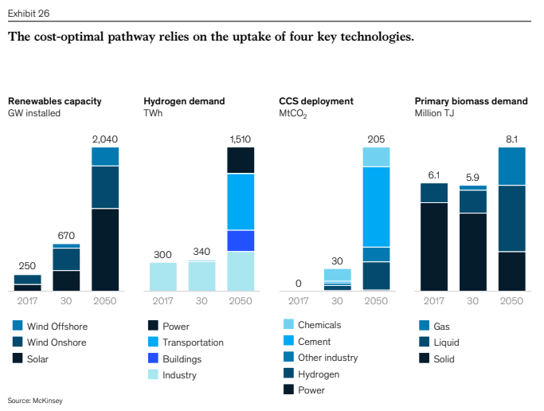
--72--
Land use
- EU has 412 Mha of land
- 40% used for agriculture
- 1/3 is forest
- Forests and soils store about 524 GtCO2e
- 62 Mha is "low value land" (not currently used for forestry, food production, feed, or biofuels, and aren't rich in biodiversity)
- 26% of land is protected
- Biodiversity Strategy target is 30%
- Bioenergy supply could be expanded on 30 Mha
- About 12 Mha land no longer required for agriculture could be reforested
- Increasing sequestration and bioenergy production levels could create an economic opportunity of up to 50 bn €/yr
- Benefitting primarily disadvantaged rural regions
Natural carbon sequestration:
Today: 248 MtCO2e/yr
2050: 353 MtCO2e/yr
Bioenergy:
Today: 3.1 million TJ
2050: 5.5 million TJ
Biodiversity protection:
Today: 26% lands protected
2030: 30% lands protected
--73--
Renewable electricity generation would require 6-12 Mha
- of which ca. 30% for solar PV, and 70% for onshore wind
- Equivalent to 1.5-3% of the total EU landmass
- Generation and transmission infrastructure would become more prominent in our habitats and may provoke resistance from locals
- Probably bigger problem in areas with high energy demand and population density, e.g. Germany and Italy
- Some societal pushback exists already
- More efficient techs are desirable
- Improved community engagement needed
Exhibit 28 Land use 2015/2050
In Mha
_____________________________2015_2050
Agriculture__________________161__149
Forestry_____________________141__153
Services and residential area27___27
Unused and abandoned areas___62___32
Bioenergy____________________6____36
Land use w/ heavy env. impact14___14 (1)
Other________________________2____?
Total________________________412__412
(1) Includes mining and quarrying, energy production, industry and manufacturing, water and waste treatment, and construction
3. Sector deep-dives
--78--
3.1 Power
Exh 30 Power pathway in brief
--79--
Power demand, TWh
____________________2017_2030___2050
Direct demand_______2513_2855___4770
Indirect demand - H2327565__1125
Total_______________2840_3420___5895
RE generation capacity, GW
________________2017_2030___2050
Wind and solar__245675__2035
Other___________186170__160
Total___________431845__2195
Exh 32 Capacity and generation mix
--85--
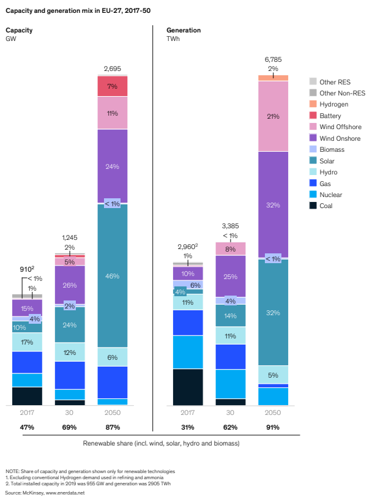
Exh 33 CAPEX decrease
--87--
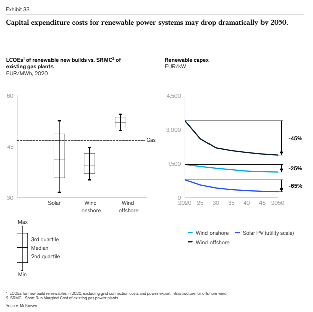
Exh 35 Generation + transmission cost projections
--90--

--92--
Potentially disruptive technologies
- Floating offshore wind farms
- Energy storage:
- Compressed air storage
- Aqueous storage
- Molten-salt batteries
- CCS solutions:
- More efficient capture membranes
- Ultra high voltage direct current (UHVDC) interconnectors
- Distributed energy resources management systems (DERMS)
- Cheaper nuclear or advances in fusion
- Requires attracting public support to make a contribution
NEW TECHNOLOGIES NEED TO EMERGE IN THE 2020s FOR THEM TO SCALE AND MAKE A MEANINGFUL CONTRIBUTION BY 2050
--95--
3.2 Transportation pathways
Assumes 100% EV/HEV passenger cars by about 2045; forecasts 45-50% drop in battery prices by 2030
- battery production capacity needs to be increased to 750 GWh/yr by 2050 (p. 103)
Fuel cell vehicles could be competitive if H2 price drops to 3.4 €/kg at the pump, and fuel cell stack costs fall to 130€/kw by 2030
EU's EV & fuel cell vehicles would need additional 200 TWh of electricity generation by 2050
At least 100 million tons of alternative fuels needed by 2050
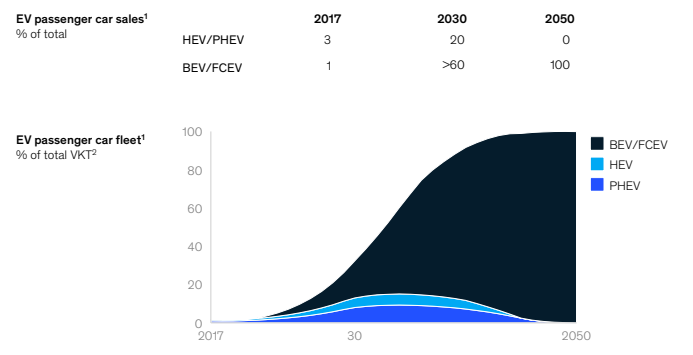
Exh 38 Transportation sector emissions
--97--
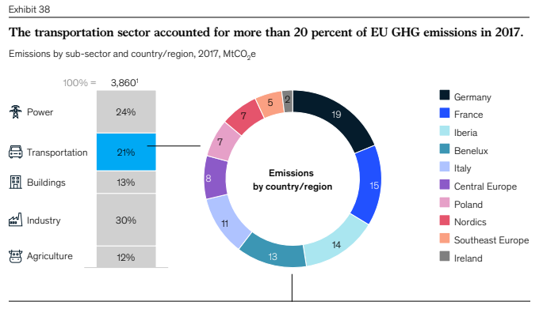
3.3. Industry emissions
Exh 41 Emissions by sub-sector
Industry accounts for 30% of EU's GHG emissions in 2017
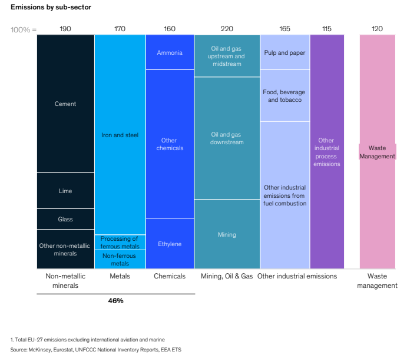
3.4 Buildings
--118--
3.5 Agriculture
--126--
3.6 Hydrogen
--134--
3.7 CCS
--143--
Exh 56 CCS infrastructure
--147--
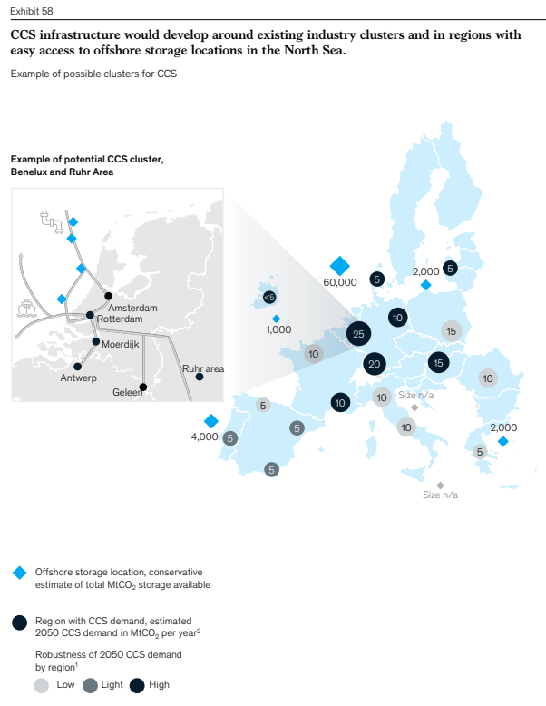
3.8 Bioenergy
--151--
Exh 61 Available residues
--153--
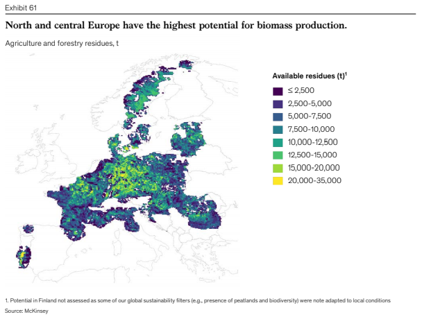
3.9 Nature-based carbon sequestration
--161--
Exh 66 Carbon stored in biomass
--162--
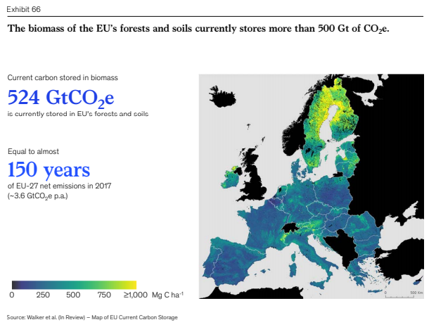
Exh 67 Potential for storing carbon in biomass
--163--
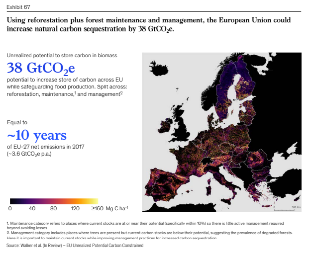
4. The socioeconomic implications of decarbonizing Europe
--168--
Exh 69 Financing the transition
--170--
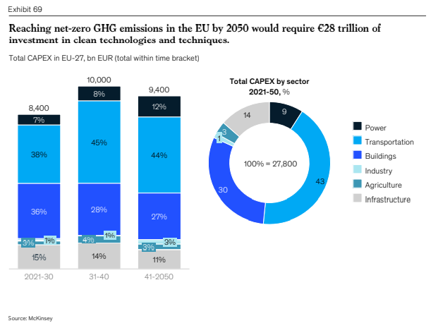
Impact on households
Exh 77 Low income households would benefit
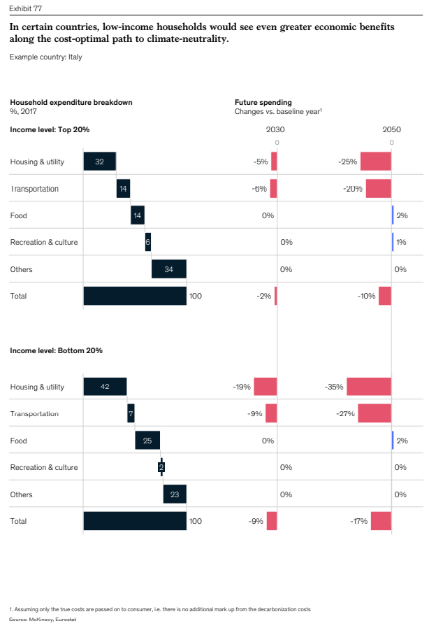
5. Charting a way forward
--190--
6. Technical appendix
- --198--
- used societal discount rate of 4%
- Methane emissions accounted using 100-year timescale to be compatible with EU accounting
- Modelled Nordics without Norway!!! (Nordpool!!!)
--200--
- recent studies indicate that >3/4 of economists are comfortable using a discount rate of 2% for climate change analysis
{kind=link}
{kind=link}
{kind=link}
{kind=link}
{kind=link}
{kind=link}
{kind=link}
{kind=link}
{kind=link}
{kind=link}
{kind=link}
{kind=link}
{kind=link}
{kind=link}
{kind=link}
{kind=link}
{kind=link}
{kind=link}
{kind=link}
{kind=link}
{kind=link}
{kind=link}
{kind=link}
{kind=link}
{kind=link}
{kind=link}
{kind=link}
{kind=link}
{kind=link}
{kind=link}
{kind=link}
{kind=link}
{kind=link}
{kind=link}
{kind=link}
{kind=link}
{kind=link}
{kind=link}